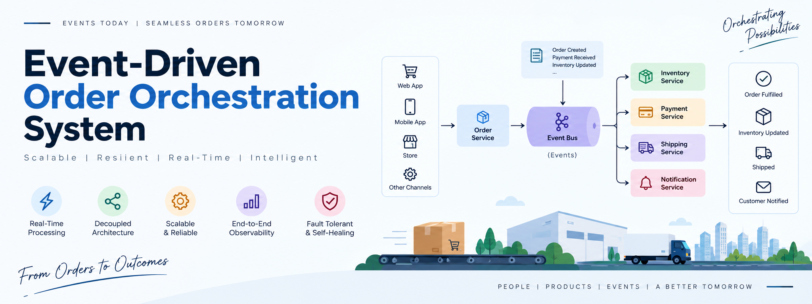
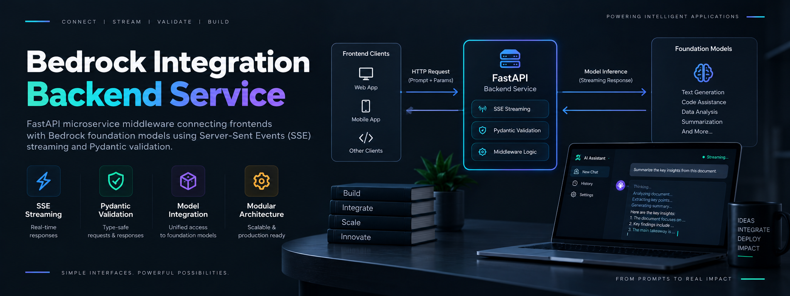
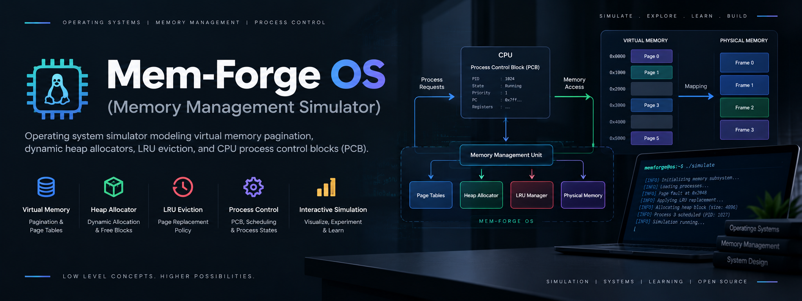

Specialization Hub — Python Backend & Systems
Python Backend & Systems Engineering
Architecting distributed, asynchronous microservices and low-level system integrations. Focused on high-concurrency event-driven orchestrators, cloud LLM middleware, clean REST APIs, and database efficiency.
Let's explore my Python Backend journey — here I went deep into System Design, Operating Systems, and Networking, and turned that understanding into distributed, event-driven backend systems built to handle real-world scale.
Asynchronous Python & APIs
Expert in FastAPI, Asyncio, Pydantic v2, RESTful API design, background tasks, and non-blocking I/O event loops.
Databases & Message Queues
Proficient with PostgreSQL (SQLAlchemy async sessions), MongoDB, Redis Streams, and RabbitMQ message brokers.
Containerization & DevOps
Experienced with Docker, Docker Compose, Kubernetes manifests, Git workflows, and automated CI/CD pipelines.
Backend & Systems Toolkit
Featured Projects

Implemented an Orchestrated Saga Pattern in Python using FastAPI, Redis Streams, and RabbitMQ for distributed transaction rollback consistency with high concurrency.

Production API middleware providing Server-Sent Events (SSE) streaming token responses from Bedrock foundation models with Pydantic v2 validation.

Low-level operating system simulator modeling virtual memory paging, LRU eviction algorithms, dynamic heap allocators, and process control blocks (PCB).